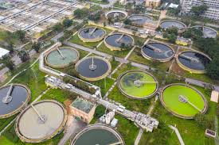
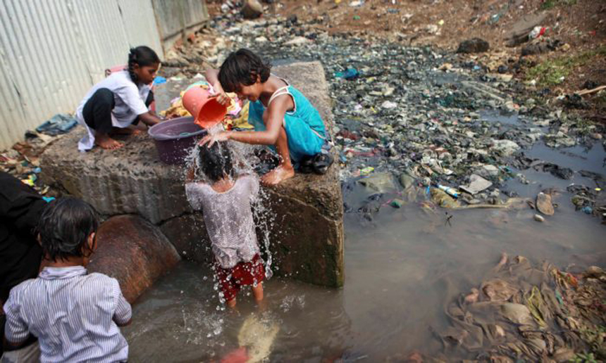
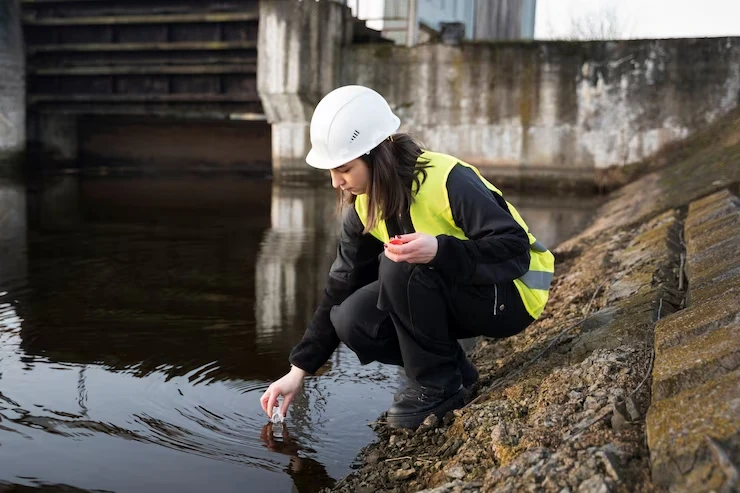

Saneamento Básico no Brasil
Entenda a importância e os desafios do acesso à água limpa e esgoto tratado.

O que é Saneamento?
Conjunto de medidas que garantem água potável, coleta e tratamento de esgoto, drenagem urbana e manejo de resíduos.

Impactos na Saúde
Falta de saneamento causa doenças como diarreia, leptospirose e hepatite, afetando principalmente crianças.

Como Melhorar?
Cobrar políticas públicas, investir em infraestrutura e promover educação sanitária nas comunidades.
Dados Alarmantes
35 milhões
de brasileiros sem acesso à água tratada
100 mil
internações por ano devido à falta de saneamento